DPO：偏好优化、隐式奖励与 PPO
本文目录 26 个章节 · 展开查看
这篇笔记沿着一个问题展开：已有“回答 A 比回答 B 更好”的偏好数据，怎样让语言模型更愿意生成好的回答？先看 RLHF 如何先学打分、再优化生成策略，再推导 DPO 怎样把这两步合成一个训练目标。
DPO（Direct Preference Optimization）直接用偏好对训练策略，标准离线 DPO 不需要另外训练显式 RM，也不需要在优化循环中运行 PPO。DPO 得到的是生成模型；它与固定 reference 一起可以定义一个隐式奖励函数。
1. 模型角色与符号
对于同一个问题 ，语言模型可能生成许多不同回答。我们用策略 表示“看到 后生成完整回答 的概率”。策略由语言模型实现；改变模型参数，就是改变这些回答的概率分布。
奖励函数 则给一个已经确定的“问题—回答”组合打分。它输出一个实数，分数高表示模型判断这个回答更值得鼓励。生成概率回答“会不会说”，奖励分数回答“有多值得鼓励”，两者承担不同角色。
| 符号 | 含义 |
|---|---|
| prompt | |
| 同一 prompt 下的 preferred / rejected 回答 | |
| 显式奖励模型输出的标量 | |
| DPO 的固定参考策略，通常为训练开始前的 SFT 模型 | |
| DPO 正在优化的策略 | |
| 给定奖励下，理想 KL 正则化问题的最优策略 | |
| 奖励与偏离 reference 之间的权衡系数 |
通常从同一个 SFT checkpoint 复制两份：一份冻结为 reference，另一份接受 DPO 更新。reference 不是 PPO 中随训练迭代同步的 old policy。
2. Bradley–Terry 偏好模型
对于一个问题 ，假设我们已有一个打分函数 ，并拿到两个候选回答。偏好数据把更受偏爱的回答记作 （winner），另一个记作 （loser）；符号 表示比较者更偏爱前者。这里先不要求知道奖励的具体值，而是规定：奖励差越大，比较者选择高分回答的概率越大。
Bradley–Terry 模型把这个关系写成下面的偏好概率。 是 sigmoid，它把任意实数差值转换到 0 与 1 之间：
当两个回答得分相等时，模型给出各一半的偏好概率；当 时，选择 的概率大于一半。公式第一步给两个奖励取指数作为正权重，第二步将分子、分母同时除以 ，于是只剩下奖励差。
这里输出的是两个回答之间的偏好概率，不是语言模型生成某个回答的概率。
公式配图（可选）
3. 显式 RM 的极大似然训练
现在让奖励函数由一个参数为 的可训练模型 来实现，这就是显式 RM。训练数据集 一共有 条比较记录；下标 表示第几条记录， 是要调整的参数。
对于第 条记录，我们定义奖励差 。接下来要做的，是让 RM 对这些已观察到的偏好给出尽可能高的概率。
3.1 从单条偏好概率到数据集似然
单条样本被标为 chosen 胜出的概率为 。在样本条件独立的建模假设下，观察到整组偏好的概率是各项之积：
3.2 取对数：乘积变求和
似然把整组已知偏好出现的可能性，看成参数 的函数。很多小于 1 的概率相乘，数值容易非常小；改用对数后可以逐条累加，也更便于求梯度。
使用 ，再代入 BT 模型：
因为 log 严格递增，取对数不改变最大化解：
3.3 极大似然变成最小化负对数损失
训练代码通常以“最小化 loss”为统一接口，所以把希望增大的对数似然取负号。 表示全部样本的损失之和， 表示“使它最小的参数”，不是损失的数值。
给整个目标乘 后，最大化改成最小化：
3.4 从样本和到均值、经验期望
令 表示对这 条记录均匀抽样的经验分布；除以与参数无关的正常数 ：
这三个写法依次是：总损失除以样本数、每条损失的平均值、从数据集中均匀抽一条记录时的平均损失。最后的期望符号只是在简写同一个平均过程。求和与均值的最优解相同，但固定学习率时梯度尺度不同。下文用 简写训练数据分布。
公式配图（可选）
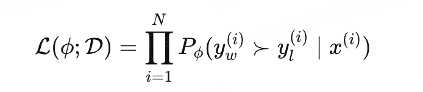
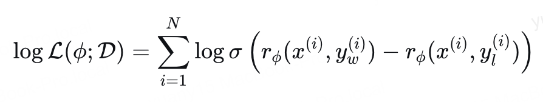
4. RLHF 的 KL 正则化目标
RLHF 的第二步才开始训练生成模型：先固定已经学好的奖励模型，让待训练策略 生成回答，再根据 RM 给出的分数调整策略。为了不让模型只顾迎合 RM、过度偏离原本的语言能力，还要保留一个冻结的参考策略 。
我们定义 为训练时抽取问题的分布， 为希望最大化的策略目标。外层先从 抽问题 ，内层再让当前策略生成回答 ：
第一项是当前策略平均能拿到的奖励，鼓励它多生成高分回答；第二项是相对 reference 的分布偏离程度，前面的负号表示偏离会被扣分。 决定这种惩罚有多强。两个目标要一起看：单纯把某条回答的奖励推高，还要支付改变生成分布的代价。PPO 是近似求解这类目标的一种方法。
公式配图（可选）
5. KL 散度与期望
5.1 先定义离散 KL
先暂时离开语言模型，考虑同一个取值集合 上的两个离散概率分布 和 。 表示其中一个可能的结果，、 表示两个分布分别给这个结果分配的概率。我们定义从 到 的 KL 散度为：
这个式子本质上是加权求和：对于每个结果 ，先算对数概率比 ，再乘以结果在 下出现的概率 ，最后遍历所有结果相加。因此，比较的数值来自两个分布，权重则始终来自 。
5.2 把对数概率比视为随机变量
为了把这个加权和写成期望，我们引入随机变量 ，让它服从分布 ，记作 。大写 表示还没有抽样的随机结果，小写 表示它的一种具体取值。
接着定义函数 ：输入一个结果 ，输出两个分布在该结果上的对数概率比。因为输入 是随机的， 也成为一个随机变量。它不再表示“抽中了哪个结果”，而表示“抽中这个结果后得到多大的对数比”。
例如，若 给两个结果的概率为 0.8 和 0.2，而 都给 0.5，那么 分别以 0.8、0.2 的概率取值 、。它的期望就是这两个数按出现概率加权的平均值。一般地，按照离散随机变量的期望定义：
第一步枚举 的每种取值：取到 的概率是 ，这时 的数值是 ，所以两者相乘后求和。第二步只是把 换回刚才定义的对数比，没有新增假设。
5.3 识别为同一个加权和
现在比较第 5.1 节与刚得到的式子，会发现两边是完全相同的加权和。因此可以把 KL 散度写成下面的期望形式：
用于语言模型时，固定 prompt ，把随机变量换成回答 ：
在这个应用里，“可能的结果”就是一条完整回答， 换成当前策略 ， 换成参考策略 。因此可以理解为：让当前模型生成回答，计算这条回答在两个模型下的对数概率比，再对当前模型可能生成的所有回答取平均。抽样权重来自 ；直接改成从 reference 抽样，会得到另一个平均值。
若 而 ，相应 KL 为无穷；以下推导假设 reference 在相关响应上有正概率且配分函数有限。对数使用自然对数。
公式配图（可选）
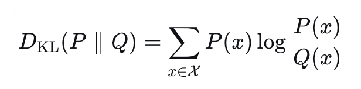
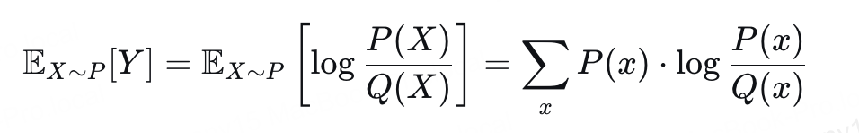
6. 从 RL 目标得到最优策略
接下来求解第 4 节的目标。先固定一个问题 ，把奖励函数 和参考策略 都视为给定；唯一要寻找的是回答分布 。我们把这个问题上的目标记作 ，省去外层问题平均，先回答“对于这一个问题，怎样分配回答概率最好”。
推导的思路是把目标整理成 KL 散度。只要得到“一个常数减去 KL”的形式，就可以利用 KL 非负来判断哪种回答分布最优。
6.1 展开 KL，并合并期望
利用第 5 节的等式：
两项都对同一策略采样的回答取期望，所以可以合并。
6.2 最大化变成最小化，将奖励写进分母
为了把式子整理成 KL 的形状，我们定义一个辅助目标 。 只是同一优化问题的另一种写法，并不是新模型或新奖励。由于 ，给目标乘负数会翻转大小关系，因此：
用 和 ，逐行得到：
这里比较的是最优解，不是宣称 与 的数值相等。
6.3 分母尚未归一化，引入 Z
观察刚得到的分母：对于固定问题 ，它给每条回答 一个正权重。我们将这个权重定义为 。其中 reference 提供初始概率，指数项按奖励调整权重：奖励较高的回答得到更大的乘数。
这些权重相加未必等于 1，所以还不能直接叫概率。为了把它们构造成分布，我们定义配分函数 ，也就是这个问题下所有回答权重的总和：
这里的 是依赖问题 的归一化常数，与上一节用大写 表示的随机变量是不同对象；后面都按函数 使用。在 的条件下，将每个权重除以同一个总和，定义新的回答分布 ：
式子右侧的求和验证了新分布的概率之和确实为 1。此时星号只是给这个候选分布起名；下一步把它代回目标，才证明它为什么最优。
6.4 代回目标，拆出与策略无关的常数
因为 ，所以：
第一行用 替换 ；第二行用对数的商法则，把归一化常数拆出来。对于同一个问题，所有回答对应同一个 ，所以第三行可以把 提到回答期望之外。最后一行认出剩余期望正是 。
还要注意：这里 与 reference 都固定，因此 也不依赖正在优化的 。这才允许我们在寻找最优策略时将它视作常数。
6.5 用 KL 非负性得到最优策略
还原 ，得到严格的目标值恒等式：
KL 非负，且在两个分布相同时为零，因此：
再对固定 prompt 分布取期望，只把常数换成 ；逐 prompt 的最优分布不变。这是分布空间中的理想解，有限模型、有限数据与优化误差仍可能使实际训练结果偏离它。
公式配图（可选）
配图中的目标变换应按“最优解相同”理解；缩放目标或删除常数后，目标数值一般不相等。
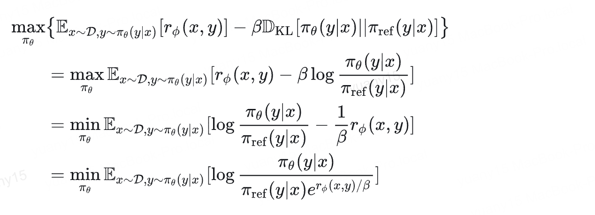
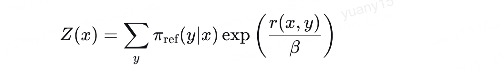
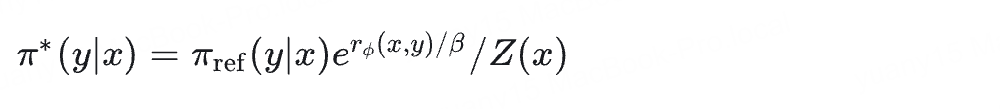
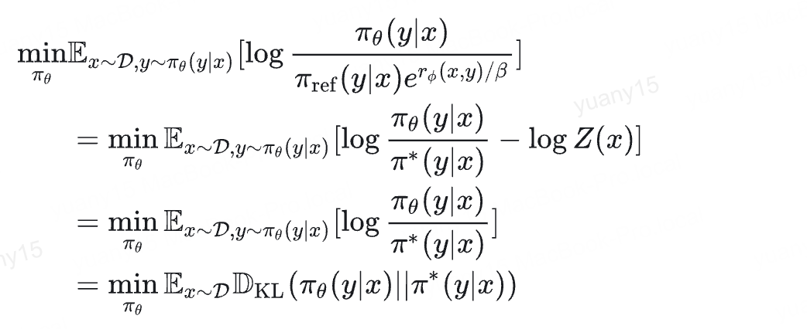
7. 从最优策略重参数化奖励
前面是在“已知奖励”的条件下求最优生成分布。DPO 接着反过来使用这个关系：既然奖励能决定最优策略，能否用策略概率来表示奖励，再直接训练策略去解释偏好数据？这样，第 3 节本来用来训练 RM 的偏好目标，就能改写为训练语言模型的目标。
7.1 从最优策略反解奖励
将第 6 节的式子两边除以 reference，再取对数：
7.2 对同一个 prompt 作奖励差，常数相消
对于同一个问题的两条回答，我们分别定义 和 。这两个记号只为缩短接下来的式子，分别表示优选回答、非优选回答相对 reference 的对数概率比。它们不是 PPO 的 advantage。
两条回答必须对应同一 ，才能消掉同一个 ；这一步没有把两个回答的生成概率直接作差。
7.3 先代入偏好概率，再代入 RM 似然
先在 Bradley–Terry 中替换奖励差：
现在偏好概率只需要策略与 reference 的概率，就能计算出来。把它放回第 3 节的最大化对数似然，优化变量便从显式奖励函数转向了表示它的策略分布：
7.4 用可训练策略参数化，改写成最小化 loss
把理论分布参数化为 ，再给整个最大化目标取负号：
实际训练时，我们用参数为 的语言模型 表示这个分布，reference 始终冻结。每次取一条偏好样本，让两个模型分别计算 、 的序列 log-prob，形成两个对数比之差，再经过 sigmoid 和负对数得到 loss，最后只对 反向传播。
这样，BT 模型、偏好数据和极大似然的含义都保留下来，而训练对象变成了生成模型。这不是假设每次更新中的 都已等于理想最优策略。
公式配图（可选）
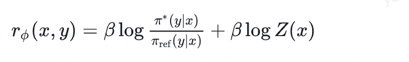
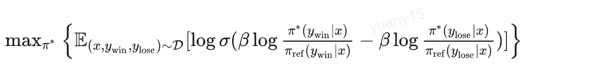
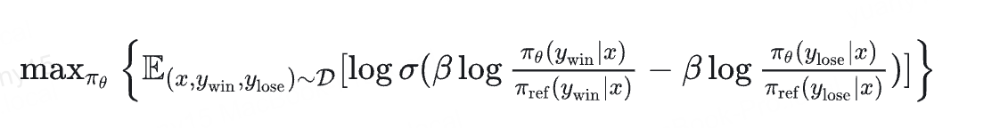
8. 隐式奖励到底是什么
把训练完成的策略记作 。现在给定任意问题 和一条确定的回答 ，冻结 DPO 模型与 reference，让二者对同一串回答 token 计算概率，而不是各自再生成一条新回答。由这两个概率，我们定义隐式奖励：
其中 是回答的第 个 token， 是此前的回答前缀；序列概率按自回归分解为每步条件概率的乘积，取对数后就是上面的逐 token 求和。计算时通常直接累加 log-prob，避免完整序列概率相乘后过小。
这是标量奖励分数，可以为负，也可以大于 1，不是概率。标准序列 log-prob 使用回答 token 的求和；若改为长度平均，就改变了奖励定义。打分需统一 tokenizer、prompt 模板、回答边界与 EOS 约定。
| 概率比 | 隐式奖励（） | 含义 |
|---|---|---|
| 正 | 相对 reference，该回答的概率被增强 | |
| 零 | 概率不变 | |
| 负 | 相对 reference，该回答被抑制 |
例如取 、两个模型给同一回答的概率分别为 和 ，则奖励为 。这反映模型学到的偏好，不保证回答客观正确。单独使用 DPO 模型的 log-prob 是另一种打分，并非上述隐式奖励。
9. 能否将它作为 PPO 的奖励
可以。缺少只依赖 prompt 的常数项不是障碍。在理想推导中令 、，则固定 prompt 分布下：
传统 Bradley–Terry RM 也仅通过奖励差学习偏好，不能仅靠这类数据识别唯一的奖励零点。PPO 需要数值奖励，不要求恢复这个零点。
进一步定义价值基线 为策略在问题 上的预期回报，优势 表示“这条回答比通常预期好多少”。给所有回答的奖励都减去同一个 ，准确的价值基线也会同步减去它。因此，把整段回答视为一个动作时：
实际 token 级 PPO 的 GAE、价值估计误差、奖励预处理等会影响训练轨迹；不能据此声称两种奖励下每一步更新都数值相同。上述常数不变性针对固定 prompt、未额外引入长度相关折扣的响应级目标。
接入过程：
- PPO 策略生成回答；冻结的 DPO 与 reference 对该回答打分。
- 由奖励与价值估计构造优势；正奖励也可能低于预期，从而产生负优势。
- PPO 用当前策略与采样旧策略的 token 概率比执行 clipped 更新：
这里 是正在训练的 PPO 策略参数， 是采样这批回答时的旧策略， 是 token 位置 的优势估计， 是裁剪范围。 衡量“同一个已采样 token 在更新前后变得多容易出现”；clipping 限制一次更新偏离旧策略过远。
这里有两种概率比：DPO/reference 用来定义奖励；PPO 当前策略/old policy 用于更新。PPO 另行使用的 KL 参考策略也必须明确配置，不应与这两个角色混用。直接最小化当前策略与 DPO 策略的 KL，更接近策略蒸馏。
“能够使用”不等于“值得再训练”：若使用同一个 reference、相同 KL 系数，并且从精确的 DPO 策略开始，则它已是这个隐式奖励目标的理想最优策略；再次优化该目标没有额外的理想收益。实际使用价值要看奖励质量、模型差异和训练设置。
10. 来源与阅读边界
- DPO 原论文：§4–5、附录 A。最优策略与奖励等价类来自该论文；概率/奖励的数值例子是本文解释。
- PPO 原论文。这里只给出策略 surrogate，完整实现还包含价值拟合等组件。